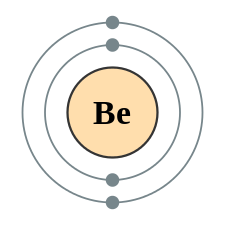
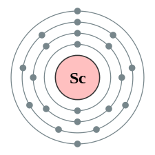

Periodiska Systemet
I naturen finns det grundämnen. Det periodiska systemet är en indelning av alla de grundämnena som existerar idag. Det är också det periodiska systemet som ses på huvudsidan!
Det periodiska systemet är uppdelat i perioder, grupper och "metallgrupper".
Ex
- Perioder är det nummer som ses på vänstra sidan av det periodiska systemet. Det finns sju perioder. En period sträcker sig från vänster till höger. Om man håller muspekarn på numret kommer den period som man vill se att "highlightas".
⇐ Exempel på highlightning till vänster
- Det periodiska systemet på hemsidan ska det vara indelat i 18 grupper. Dock så gick det inte på min hemsida pga. tekniska svårigheter.
- "Metallgrupper" är grupper som ämnen är indelade i beroende på vilka egenskaper de har. T.ex. är ämnen som reagerar väldigt kraftigt med vatten en grupp, alkaliemetaller.
Väte
Symbol:
HAtomnummer:
1Atommassa:
1,008 uSmältpunkt:
-259,2°CKokpunkt:
-252,9°C
Upptäcktes:
1766Upptäcktes av:
Henry CavendishPeriod 1Grupp 1
Beryllium
Symbol:
BeAtomnummer:
4Atommassa:
9,012 uSmältpunkt:
1287°CKokpunkt:
2970°C
Upptäcktes:
1797Upptäcktes av:
Louis Nicolas VauquelinPeriod 2Grupp 2
Skandium
Symbol:
ScAtomnummer:
21Atommassa:
44,9559 uSmältpunkt:
1541°CKokpunkt:
2836°C
Upptäcktes:
1879Upptäcktes av:
Lars Fredrik NilsonPeriod 4Grupp 3
Bor
Symbol:
BAtomnummer:
5Atommassa:
10,811 uSmältpunkt:
2076°CKokpunkt:
3930°C
Upptäcktes:
1808Upptäcktes av:
Joseph Louis Gay-Lussac, Louis Jacques ThénardPeriod 2Grupp 13
Aluminium
Symbol:
AlAtomnummer:
13Atommassa:
26,9816 uSmältpunkt:
660,32°CKokpunkt:
2470°C
Upptäcktes:
1825Upptäcktes av:
Hans Christian ØrstedPeriod 3Grupp 13
Ämnena bredvid denna text kan du testa att trycka på och se vad som händer.
Längst upp på skärmen finns metallgrupperna och om man håller muspekaren på någon av dem, ser du vilka ämnen som den gruppen innehar.
Om man nu är intresserad av lite mer fakta om ett ämne, låt oss ta väte, kan man då trycka på dess ruta i periodiska systemet och få upp en popup-ruta om väte. Testa att trycka på väte här ovanför! P.s. Det är den blå rutan med beteckningen H.